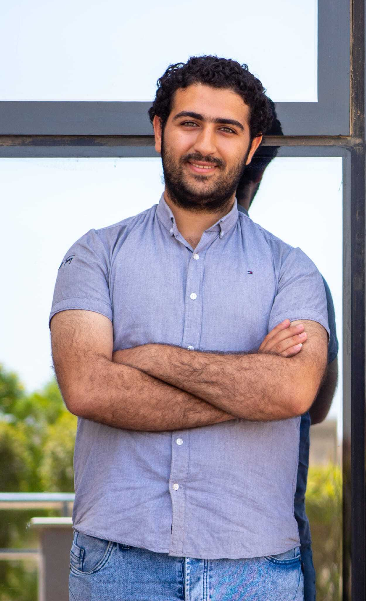
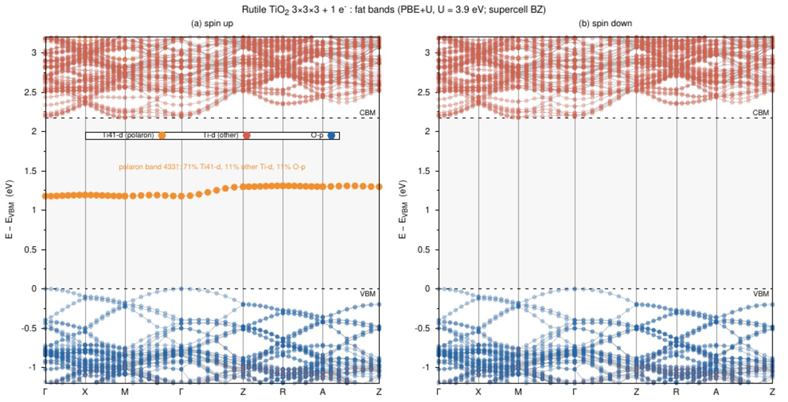
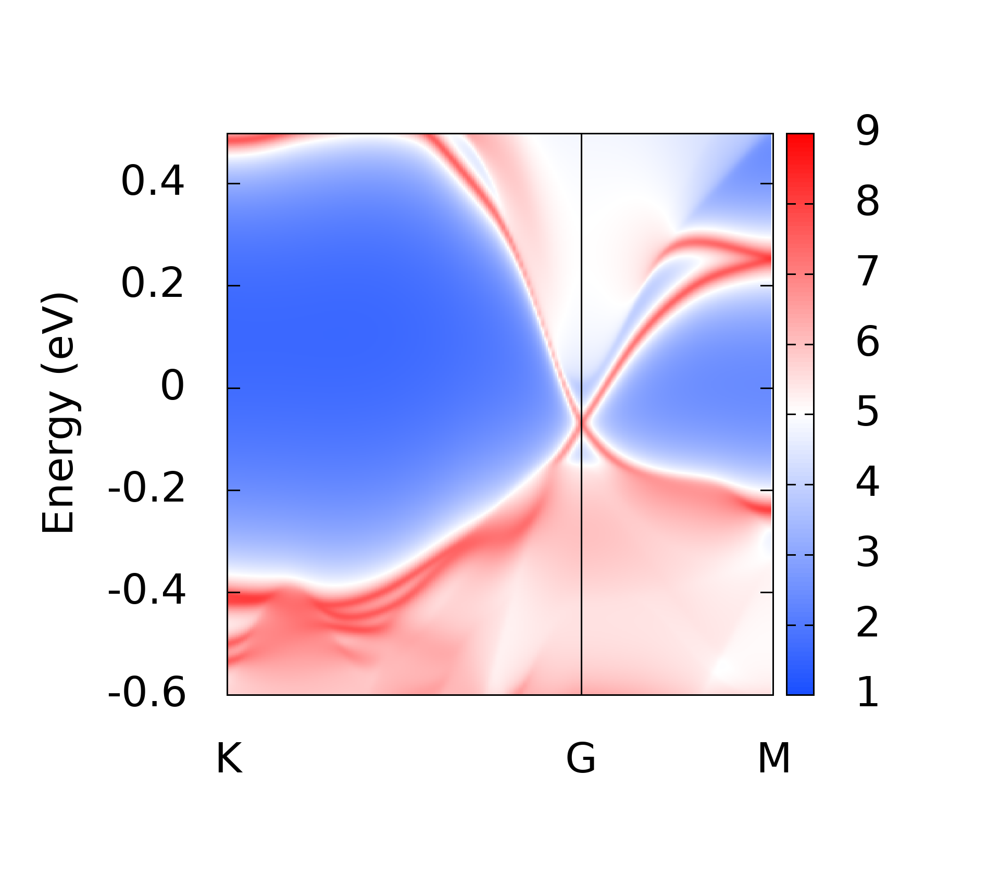
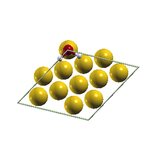

Topological Materials
Topological insulators, spin-orbit coupling, electronic bands, and topological invariants.

University of Bologna
I am interested in topological materials, electronic-structure theory, density-functional theory, Quantum Information and Computation.
Move your cursor over the crystal: you are an excess electron in rutile TiO2, and the lattice distorts around you (a small polaron).
01 · Research
My work combines theoretical condensed matter physics with computational simulation, data analysis, and reproducible Linux/HPC workflows.
Topological insulators, spin-orbit coupling, electronic bands, and topological invariants.
Density-functional theory, VASP, Quantum ESPRESSO, Wannier90, band structures, and tight-binding models.
Adsorption phenomena, surface chemistry, molecular dynamics, and materials characterisation.
Python, C/C++, LaTeX, data visualisation, Linux, SLURM, and high-performance computing workflows.
02 · Projects

Fat bands of a 162-atom supercell with one excess electron: the orange band in the gap is the polaron.
DFT+U (VASP) study of an excess electron trapped on a single Ti site of rutile TiO2: site-controlled trapping, the polaron formation energy (EPOL = −0.163 eV, stable), and the in-gap polaron level 0.92 eV below the conduction band.

First-principles and Wannier-based study of a topological-insulator system. The project focuses on electronic bands, spin-orbit coupling, Wannier functions, and topological features of the material.

Density-functional-theory calculations on adsorption phenomena at the surface, with emphasis on surface structure, electronic properties, and chemical interactions.
03 · Experience
Alma Mater Studiorum – University of Bologna.
Professional Master in Computer Science (Quantum Computing), Alexandria University.
Teaching support, problem-solving sessions, and laboratory work at UST-ZC and MUST.
University for Science and Technology at Zewail City
04 · Contact
I welcome research discussions, collaboration opportunities, and professional inquiries.